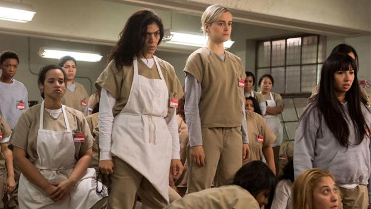

Orange is the new Black
Orange Is the New Black (sometimes abbreviated to OITNB) is an American comedy-drama web television series.[1][2] The series, created by Jenji Kohan and produced by Tilted Productions in association with Lionsgate Television, is based on Piper Kerman's memoir, Orange Is the New Black: My Year in a Women's Prison (2010), about her experiences at FCI Danbury, a minimum-security federal prison.
Main Cast
Premise
The story of Piper Chapman, a woman in her thirties who is sentenced to fifteen months in prison after being convicted of a decade-old crime of transporting money to her drug-dealing girlfriend.
Episodes
Season 1(2013)
Sentenced to 15 months for a crime committed ten years earlier, Piper Chapman leaves her supportive fiancé Larry for her new home: a women's prison. Her counselor, Sam Healy, empathizes with her and tries to gently give her tips to survive. She grapples with the racial dynamics of prison life and learns some of the rules. Unfortunately, she offends Red, the powerful matriarch of the prison kitchen, who responds by serving Piper a bloody tampon and subsequently starving her.
Piper's best friend Polly takes more authority over their soap-making business. Piper deals with romantic advances from Suzanne (Crazy Eyes). After Crazy Eyes submits a request to bunk with Piper, Piper firmly rejects her advances. After Piper moves into Miss Claudette's cube, Crazy Eyes urinates on the floor of their space. Piper's relationship with Alex is very hostile.
While relaxing in the exercise yard, Piper sees a chicken. When she mentions it in passing, Red recounts her dream of cooking a proper chicken and offers a gift to the person who catches the chicken. Larry discovers that Alex gave Piper's name to the Feds. To keep Piper focused on life beyond prison, Larry lies to her. Polly arranges for Piper to take a business call, but Piper skips it to chase the chicken. Morello ends her relationship with Nicky. Sophia asks Sister Ingalls for estrogen pills, but she refuses.
Piper confronts her mother. Polly takes full control of the soap business. Now believing that Alex didn't name her, Piper starts to view her fondly. Larry agrees to write an article about his fiancée's term in prison. Healy announces elections for the women's advisory council, and encourages Piper to run for WAC. When she refuses, Healy places her on the council anyway.
The flu bug circulates through the prison. Larry's article is printed. While Piper is happy that it was published, she is upset that most of the information is inaccurate. Healy reads the article and begins acting coldly towards Piper upon realizing her history with other girls. Piper and Alex flirt and reminisce while they try to fix a dryer. Pennsatucky locks Alex into the dryer. Polly gives birth. Daya is pregnant.
When Pennsatucky charges at Piper with a shiv fashioned from a wooden Christian cross, Piper doubles her over with a kick to the groin, then drops her to the ground with an elbow to the head. The episode ends with an enraged Piper on top of Pennsatucky, relentlessly punching her.
Season 2(2014)
Piper is awakened in solitary and, without being given any information, forced to board a bus and a plane to whereabouts unknown. After she lands, finally realizing she is in Chicago, Piper assumes she has been transferred for killing Pennsatucky and attempts to adjust to her new surroundings. After speaking with Alex, Piper discovers she is in Chicago to testify in the trial of Alex's drug boss, Kubra Balik, and that the stay is temporary.
A flashback shows young Taystee — then referred to as Tasha — at a Black Adoption Festival, trying to find a permanent home. She meets a drug dealer, Vee, who later becomes a mother figure to her. Eventually, Taystee starts working for her in the drug trade. Pennsatucky is revealed to have survived her fight with Piper, and is released from solitary after a month.
Nicky and Big Boo engage in a contest to see who can sleep with the most women in jail. Vee offers to help Poussey sell her hooch to other inmates but Poussey declines. Red starts to grow plants in an old greenhouse as a cover to move contraband into the prison. Larry and Polly begin to bond more as Polly's husband is away. Lorna discovers that her love, Christopher, is marrying another woman.
The bathroom that Gloria Mendoza and her girls use has plumbing problems and feces coming out of the shower drains. Vee is appointed head of the African American posse, and goes head to head against Gloria's Latinas when they infiltrate the Ghetto bathroom. Fig, the assistant warden, refuses to fix the Latina showers due to budget problems, and limits shower times to 30 seconds as a solution. As tensions rise between the blacks and the Latinas, Vee and Mendoza make a deal in order to calm things down.
The inmates prepare for a Valentine's Day party. Red begins importing items through the sewer drain in the greenhouse with the help of her son, Vasily. Piper begins questioning prisoners and guards to find out where the prison's budget money is really going. Flashbacks detail Poussey's romantic history with another girl (played by Nina Rausch) while living on an army base in Germany.
Rosa is told by her doctor that her chemo is not working and she has only 3-6 weeks left to live. Morello leaves the keys in the van with Rosa, who takes the vehicle and flees the prison in order to taste freedom in the last few days of her life. She spies Vee by the side of the road and intentionally runs her down with the van as "(Don't Fear) The Reaper" plays on the radio.
Season 3(2015)
The prison hosts a special visit to celebrate Mother's Day, as part of Caputo's attempt to "soften" his regime in light of recent controversies. Piper finds out that Alex has returned to Litchfield and the two reconcile. Poussey misses her mother. Bennett struggles to deal with Daya's family while keeping under wraps that he is the father of her child. Daya and Aleida clash on motherhood. Pennsatucky holds a memorial for the abortions she has had.
Litchfield prison combats a bed bug infestation. This forces the prisoners to wear underwear or disposable paper suits and causing some of them to become paranoid about the cause of the bugs. Red confronts Piper about the lies she told regarding Red's family's store, causing Red to cut off both Piper and her husband for dishonesty before Healy gives her a dressing down. Pornstache's mother visits the prison and offers to adopt Daya's baby, causing tension among Bennett, Daya and Aleida. Alex struggles to deal with being back in prison.

Poussey, Taystee and Suzanne save Brook from her overdose. Piper confronts Flaca about stealing the proceeds from her panty business, but soon comes to realize that Stella is the culprit, as she will have no money to live on when she gets released. Piper exacts revenge by framing Stella for possession of dangerous contraband, resulting in Stella being dragged off to maximum security prison. Healy investigates the possibility of a romantic life with Red, but Red quashes the opportunity. Morello marries Vince, while Black Cindy shows a newfound sincerity in her attempts to become Jewish.
Alex is cornered in the greenhouse by a new guard sent by Kubra, and her fate is left uncertain. As the prisoners frolic in the lake, construction crews convert the prison's beds into two-tiered bunkbeds, doubling the prison's capacity, and several busloads of new prisoners arrive at Litchfield.
Season 4(2016)
Caputo is promoted to Director of Human Activity. He gets new CO's to round up the prisoners who are at the lake. Piscatella, one of the new CO’s, is strict on security and obedience, and is feared by both guards and inmates. He is made captain of the guards. Maureen wants to escape the prison with Suzanne, but Suzanne doesn’t want to run away and goes back to the prison. Maureen is eventually captured by Caputo. The new inmates are integrated with the old inmates.
The inmates struggle with the overcrowding of the prison. Healy gets Judy King a new roommate, Yoga Jones. Black Cindy battles with her new roommate, Alison Abdullah over shared space. Red attempts to stop her bunkmate’s snoring but to no avail. Piper befriends her bunkmate and she becomes her bodyguard. Doggett is worried that Maritza is being raped by Officer Coates, although he is shown to only have feelings for Doggett.

While everyone's attention is on calming Suzanne down, no-one notices that Poussey is unable to breathe, and she eventually dies. Following Poussey's death, MCC tells Caputo to hold off on calling the police until they can develop an angle, while Taystee urges Caputo to at least call Poussey's dad, and break the news to him. Soso wanders into the library to find Suzanne trapped under a fallen shelf.
In a flashback, Poussey has a fun night with strangers she meets in New York City that ends in her arrest for drug possession and trespassing.